Git 分布式版本控制系统, 此外还有 SVN (集中式版本控制系统)
下载地址(阿里云镜像) :CNPM Binaries Mirror (npmmirror.com)
Git Bash : Linux命令行风格 (推荐使用)
Git CMD: window命令行风格
Git UID : 图形界面
工具使用技巧: 命令行切换目录麻烦,可以在直接打开该目录,再鼠标右击进入Git Bash
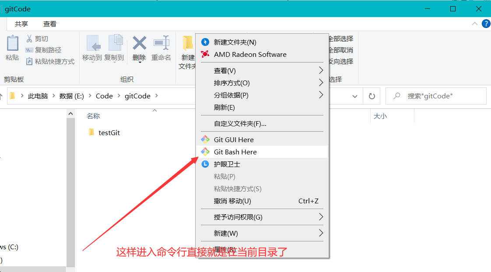
配置 使用Git必须配置用户名和邮箱(不需要是真实的邮箱)
1 2 3 4 git config --global --list git config --system --list git config --global user.name "名字" git config --global user.email 318482536@qq.com
Git配置文件 系统配置文件在: 安装路径\Git\etc\gitconfig
用户配置文件 C:\Users\当前用户名.gitconfig
Git基本原理(理论)
工作区域
Git 在本地有三个工作区域: , ==工作目录(Working Directory) , 暂存区(Stage/index) , 资源库(Git Directory或Repsoitory),== 远程的Git仓库如GItHub或Gitee码云(Remole Directory)共四个工作区域 ,转换关系如下:
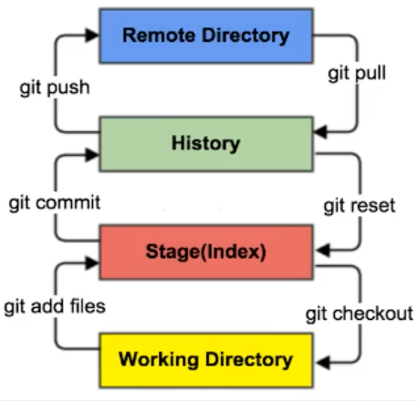
(图片来自狂神说)
工作目录 add => 添加到暂存区 , commit => 提交到本地仓库 ,push => 推送到远程仓库
到达工作目录 checkout <= 存放到暂存区 , reset <= 下载到本地仓库 ,pull <= 远程仓库
工作区: 平时项目代码存放的地方,是真实的目录
暂存区: 用于临时存代码的改动,实际上只是一个文件,记录了即将提交到文件列表的信息 ,并不是真实目录
本地仓库: 安全存放数据的位置(实际上存在于.git目录中),存有所有版本的数据,其中HEAD文件指向最新放入仓库的版本
**远程仓库:**相当于网盘
注: HEAD文件在仓库目录的隐藏文件.git文件中,此文件记录了分支数 以及分支指向,
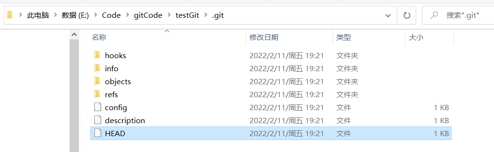
基本流程
在工作目录添加,修改文件; ==相当于我们日常Coding的项目文件目录==
将需要进行版本管理的文件放入暂存区 ==对应命令 git add==
将暂存区的文件提交到本地仓库 ==对应命令 git commit==
(可选) 提交到远程仓库 ==对应命令 git add push==
git管理的文件状态: 是否跟踪(untrack,track): 文件在工作目录且未被git管理就是属于未跟踪 ,并且是属于未暂存的,
是否暂存 (unstage,stage): 当文件已经被添加到暂存区后,就属于暂存状态 了,但是git管理的文件被修改后,又会变成未暂存状态
已修改(modfiied): 顾名思义,也就是当暂存区的文件被修改后,文件会变成已经修改状态,并且属于未状态,不过请注意,未跟踪的文件由于是未被git管理,故未跟踪的文件即使被修改也还是未跟踪状态
已提交(commited): 顾名思义,也就是被提交到本地仓库的文件,此外,请注意本地仓库在隐藏目录.git中,并且只保存一些修改记录信息,所以并不能在本地仓库中真实的查看到代码或文件内容 ,咱们能正常查看到的文件是属于工作区的(这也就意味着我们修改文件后,并不能直接查看到原来的文件内容)
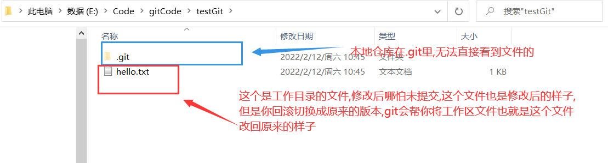
命令(速查) 1 2 3 4 5 6 7 8 9 10 11 12 13 14 15 16 17 18 19 20 21 22 23 git init # 在当前目录初始化git项目 git clone url #克隆一个远程仓库项目到本地,url是项目链接; 克隆会初始化本地库,拉去代码,起一个默认别名 git status [文件名]# 查看仓库(文件)状态 git add 文件名 # 添加文件到暂存区 git rm --cached 文件名 # 将文件从暂存区移除,相当于标记为未跟踪,不删除本地文件 git commit -m "日志信息" 文件名 # 提交到本地仓库 git reflog # 查看历代版本信息 git log # 查看详细版本 git reset --hard 版本号 # 回滚,即切换版本 git push 远程库的别名或url 分支名 #将本地库推送到远程库 git pull 远程库的别名或url 分支名 #将本地库拉取到远程库 # 以下不常用 git git restore 文件名 #恢复,这个命令针对已修改但还未添加到暂存区的文件,撤销本次修改操作,文件将恢复成未修改之前的样子 git restore --staged 文件名 #恢复暂存的文件,这个命令针对已修改并且已经添加到暂存区的文件,相当于撤销本次添加到暂存区操作 # 分支管理命令 git branch 分支名 # 创建分支 git branch -v + # 查看分支 git checkout 分支名 # 切换分支 git merge 分支名 # 把指定的分支合并到当前分支下 # 别名管理命令 git remote -v #查看所有远程链接别名 git remote add 别名 远程地址url #添加别名 git remote remove 别名 #删除别名
分支 为了提高开发效率,开建立多个分支进行协同开发,分支可简单理解为一个单独的副本(底层是指针的引用),
基本开发流程
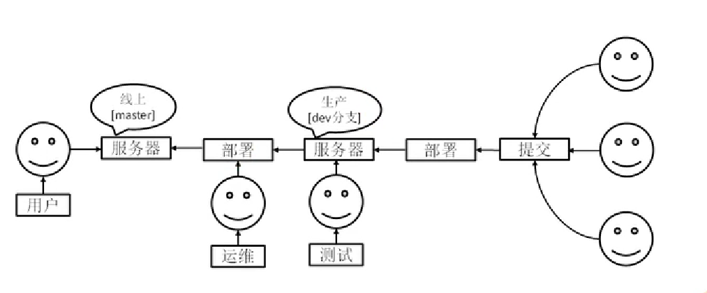
( 图片来自尚硅谷 )
分支协同开发
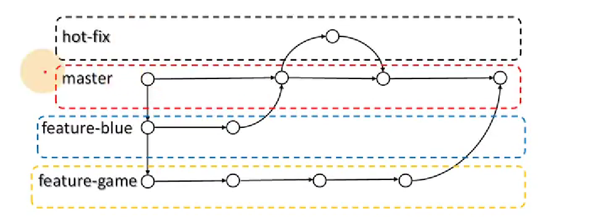
( 图片来自尚硅谷 )
master分支:代表项目上线正式版本
hot-fix 分支: 项目热维护分支,不需要将部署的项目停止运行
feature-bule: 开发分支
feature-game: 开发分支
分支操作(命令) 1 2 3 4 git branch 分支名 # 创建分支 git branch -v # 查看分支 git checkout # 切换分支 git merge 分支名 # 把指定的分支合并到当前分支下
团队协作 团队内协作
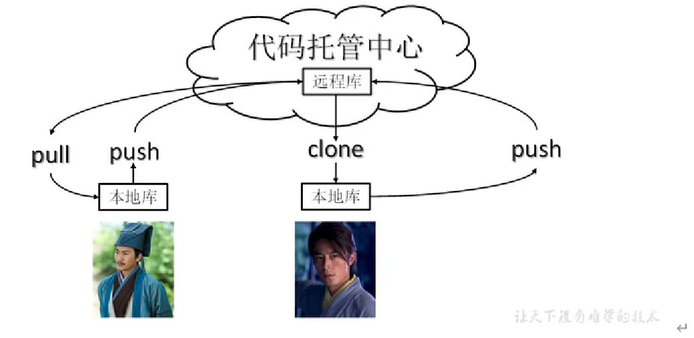
(图片来自尚硅谷)
跨团队协作
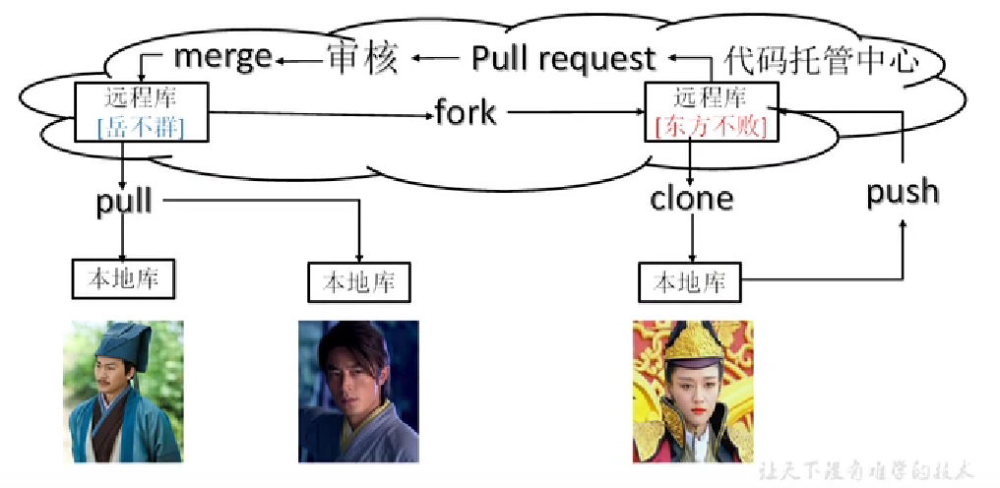
(图片来自尚硅谷)
远程仓库 相关命令 1 2 3 4 5 git remote -v git remote add 别名 远程地址url git push 远程库别名或url git pull 远程库别名或url git remote remove 别名
权限 以下针对Gitee来说,GitHub同理
仓库的团队内成员(以下简称团队成员,实际上还细分开发者,观察者等不做讨论,并且均当作拥有开发者及以上的权限)
push的时候,输入的登陆信息尽量选择邮箱名或手机号作为用户名 ,输入gitee用户名可能会失败
团队成员在push到远程库的时候,无需管理员同意,并且分支也是同步的 ,也就是说团队的成员在哪个分支下进行的推送,远程也只有那个分支下进行改变
团队外成员无法直接Push ,可以在Gitee通过fork叉入生成自己远程库 ,随后在克隆到到自己本地 ,修改完后push到自己的远程库 ,然后在Gitee上通过发起Pull Resquest到团队的远程库 ,随后管理员会看到申请,决定是否合并
样例: 以下所有案例都是连续的操作
初次提交 有如下案例,在testGit项目中存在一个hello.txt文件,从未追踪到提交到本地库生成版本信息如下:
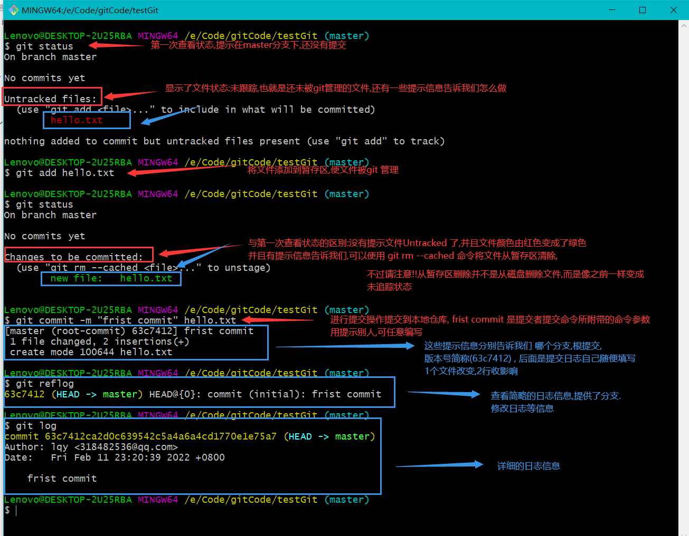
后续修改 如下代码赋值终端信息为了方便观看,接上面的案例
1 2 3 4 5 6 7 8 9 10 11 12 13 14 15 16 17 18 19 20 21 22 23 24 25 26 27 28 29 30 31 32 33 34 35 36 37 38 39 40 41 42 43 44 45 46 47 48 49 50 51 52 53 54 55 56 57 58 59 60 61 62 63 64 65 66 67 68 69 70 71 Lenovo@DESKTOP-2U25RBA MINGW64 /e/Code/gitCode/testGit (master) $ ls -lh total 1.0K -rw-r--r-- 1 Lenovo 197609 12 Feb 11 22:55 hello.txt Lenovo@DESKTOP-2U25RBA MINGW64 /e/Code/gitCode/testGit (master) $ cat hello.txt hello java Lenovo@DESKTOP-2U25RBA MINGW64 /e/Code/gitCode/testGit (master) $ echo "hello javaweb!!!" >> hello.txt echo "hello javawebcat hello.txt !" >> hello.txtLenovo@DESKTOP-2U25RBA MINGW64 /e/Code/gitCode/testGit (master) $ cat hello.txt hello javahello javawebcat hello.txt ! Lenovo@DESKTOP-2U25RBA MINGW64 /e/Code/gitCode/testGit (master) $ git status On branch master Changes not staged for commit: (use "git add <file>..." to update what will be committed) (use "git restore <file>..." to discard changes in working directory) modified: hello.txt no changes added to commit (use "git add" and/or "git commit -a" ) Lenovo@DESKTOP-2U25RBA MINGW64 /e/Code/gitCode/testGit (master) $ git add hello.txt warning: LF will be replaced by CRLF in hello.txt. The file will have its original line endings in your working directory Lenovo@DESKTOP-2U25RBA MINGW64 /e/Code/gitCode/testGit (master) $ git status On branch master Changes to be committed: (use "git restore --staged <file>..." to unstage) modified: hello.txt Lenovo@DESKTOP-2U25RBA MINGW64 /e/Code/gitCode/testGit (master) $ git commit -m "second commit" hello.txt warning: LF will be replaced by CRLF in hello.txt. The file will have its original line endings in your working directory [master 1db21ac] second commit 1 file changed, 1 insertion(+), 1 deletion(-) Lenovo@DESKTOP-2U25RBA MINGW64 /e/Code/gitCode/testGit (master) $ git reflog 1db21ac (HEAD -> master) HEAD@{0}: commit: second commit 63c7412 HEAD@{1}: commit (initial): frist commit Lenovo@DESKTOP-2U25RBA MINGW64 /e/Code/gitCode/testGit (master) $ git log commit 1db21ac75f97fdd8bc9dfed2e57eb430c3153b5b (HEAD -> master) Author: lqy <318482536@qq.com> Date: Sat Feb 12 00:00:04 2022 +0800 second commit commit 63c7412ca2d0c639542c5a4a6a4cd1770e1e75a7 Author: lqy <318482536@qq.com> Date: Fri Feb 11 23:20:39 2022 +0800 frist commit Lenovo@DESKTOP-2U25RBA MINGW64 /e/Code/gitCode/testGit (master) $
版本穿梭,代码回滚 接上面两个案例,将版本切换为初代版本
版本切换会将造成本地工作区的文件内容修改 ,但本质是git在操作HEAD指针
1 2 3 4 5 6 7 8 9 10 11 12 Lenovo@DESKTOP-2U25RBA MINGW64 /e/Code/gitCode/testGit (master) $ git reflog 1db21ac (HEAD -> master) HEAD@{0}: commit: second commit 63c7412 HEAD@{1}: commit (initial): frist commit Lenovo@DESKTOP-2U25RBA MINGW64 /e/Code/gitCode/testGit (master) $ git reset --hard 63c7412 HEAD is now at 63c7412 frist commit # 提示HEAD指针现在指向第一个版本 Lenovo@DESKTOP-2U25RBA MINGW64 /e/Code/gitCode/testGit (master) $
查看创建分支,多分支提交 1 2 3 4 5 6 7 8 9 10 11 12 13 14 15 16 17 18 19 20 21 22 23 24 25 26 27 28 29 30 31 32 33 34 35 36 37 38 39 40 41 42 43 44 45 46 47 48 49 50 51 52 53 54 55 56 57 58 59 60 61 62 63 64 65 66 67 68 69 70 71 72 73 74 75 76 77 78 79 80 81 82 83 84 85 86 87 88 89 90 91 92 93 94 95 96 97 98 99 100 101 102 103 104 105 106 107 108 Lenovo@DESKTOP-2U25RBA MINGW64 /e/Code/gitCode/testGit (master) $ git branch -v * master 1db21ac second commit Lenovo@DESKTOP-2U25RBA MINGW64 /e/Code/gitCode/testGit (master) $ git branch hot-fix Lenovo@DESKTOP-2U25RBA MINGW64 /e/Code/gitCode/testGit (master) $ git branch -v hot-fix 1db21ac second commit * master 1db21ac second commit Lenovo@DESKTOP-2U25RBA MINGW64 /e/Code/gitCode/testGit (master) $ git checkout hot-fix Switched to branch 'hot-fix' Lenovo@DESKTOP-2U25RBA MINGW64 /e/Code/gitCode/testGit (hot-fix) $ ls -lh total 1.0K -rw-r--r-- 1 Lenovo 197609 42 Feb 12 10:45 hello.txt Lenovo@DESKTOP-2U25RBA MINGW64 /e/Code/gitCode/testGit (hot-fix) $ cat hello.txt hello javahello javawebcat hello.txt ! Lenovo@DESKTOP-2U25RBA MINGW64 /e/Code/gitCode/testGit (hot-fix) $ echo "\n hello Git! and Java yyds" >> hello.txt Lenovo@DESKTOP-2U25RBA MINGW64 /e/Code/gitCode/testGit (hot-fix) $ cat hello.txt hello javahello javawebcat hello.txt ! \n hello Git! and Java yyds Lenovo@DESKTOP-2U25RBA MINGW64 /e/Code/gitCode/testGit (hot-fix) $ git status . On branch hot-fix Changes not staged for commit: (use "git add <file>..." to update what will be committed) (use "git restore <file>..." to discard changes in working directory) modified: hello.txt no changes added to commit (use "git add" and/or "git commit -a" ) Lenovo@DESKTOP-2U25RBA MINGW64 /e/Code/gitCode/testGit (hot-fix) $ git add . warning: LF will be replaced by CRLF in hello.txt. The file will have its original line endings in your working directory Lenovo@DESKTOP-2U25RBA MINGW64 /e/Code/gitCode/testGit (hot-fix) $ git status On branch hot-fix Changes to be committed: (use "git restore --staged <file>..." to unstage) modified: hello.txt Lenovo@DESKTOP-2U25RBA MINGW64 /e/Code/gitCode/testGit (hot-fix) $ git commit -m "hot-fix frist commit" . warning: LF will be replaced by CRLF in hello.txt. The file will have its original line endings in your working directory [hot-fix f804008] hot-fix frist commit 1 file changed, 1 insertion(+) Lenovo@DESKTOP-2U25RBA MINGW64 /e/Code/gitCode/testGit (hot-fix) $ git checkout master Switched to branch 'master' Lenovo@DESKTOP-2U25RBA MINGW64 /e/Code/gitCode/testGit (master) $ cat hello.txt hello javahello javawebcat hello.txt ! Lenovo@DESKTOP-2U25RBA MINGW64 /e/Code/gitCode/testGit (master) $ git reflog 1db21ac (HEAD -> master, checkout) HEAD@{0}: checkout: moving from hot-fix to master f804008 (hot-fix) HEAD@{1}: commit: hot-fix frist commit 1db21ac (HEAD -> master, checkout) HEAD@{2}: checkout: moving from master to hot-fix 1db21ac (HEAD -> master, checkout) HEAD@{3}: reset: moving to 1db21ac 63c7412 HEAD@{4}: reset: moving to 63c7412 1db21ac (HEAD -> master, checkout) HEAD@{5}: commit: second commit 63c7412 HEAD@{6}: commit (initial): frist commit Lenovo@DESKTOP-2U25RBA MINGW64 /e/Code/gitCode/testGit (master) $ git log commit 1db21ac75f97fdd8bc9dfed2e57eb430c3153b5b (HEAD -> master, checkout) Author: lqy <318482536@qq.com> Date: Sat Feb 12 00:00:04 2022 +0800 second commit commit 63c7412ca2d0c639542c5a4a6a4cd1770e1e75a7 Author: lqy <318482536@qq.com> Date: Fri Feb 11 23:20:39 2022 +0800 frist commit Lenovo@DESKTOP-2U25RBA MINGW64 /e/Code/gitCode/testGit (master) $ git checkout hot-fix Switched to branch 'hot-fix' Lenovo@DESKTOP-2U25RBA MINGW64 /e/Code/gitCode/testGit (hot-fix) $ cat hello.txt hello javahello javawebcat hello.txt ! \n hello Git! and Java yyds
分支合并(无冲突) 接上面的例子,将hot-fix修改的内容合并到master分支上,并且两者是没有修改到重复的地方(也就是无冲突)
1 2 3 4 5 6 7 8 9 10 11 12 13 14 15 16 17 18 19 20 Lenovo@DESKTOP-2U25RBA MINGW64 /e/Code/gitCode/testGit (hot-fix) $ git checkout master Switched to branch 'master' Lenovo@DESKTOP-2U25RBA MINGW64 /e/Code/gitCode/testGit (master) $ git merge hot-fix Updating 1db21ac..f804008 Fast-forward hello.txt | 1 + 1 file changed, 1 insertion(+) Lenovo@DESKTOP-2U25RBA MINGW64 /e/Code/gitCode/testGit (master) $ cat hello.txt hello javahello javawebcat hello.txt ! \n hello Git! and Java yyds Lenovo@DESKTOP-2U25RBA MINGW64 /e/Code/gitCode/testGit (master) $
合并冲突 出现的原因: 多个分支同时修改了==同一个文件的同一个位置==,这时git不会自动处理(仅仅把冲突标记),需要人为修改
下面例子演示了hot-fex分支和master同时在hello.txt最后一行添加数据合并的情况
1 2 3 4 5 6 7 8 9 10 11 12 13 14 15 16 17 18 19 20 21 22 23 24 25 26 27 28 29 30 31 32 33 34 35 36 37 38 39 40 41 42 43 44 45 46 47 48 49 50 51 52 53 54 55 56 57 58 59 60 61 62 63 64 Lenovo@DESKTOP-2U25RBA MINGW64 /e/Code/gitCode/testGit (hot-fix) $ cat hello.txt hello javahello javawebcat hello.txt ! \n hello Git! and Java yyds Lenovo@DESKTOP-2U25RBA MINGW64 /e/Code/gitCode/testGit (hot-fix) $ cat hello.txt hello javahello javawebcat hello.txt ! \n hello Git! and Java yyds hot-fix test Lenovo@DESKTOP-2U25RBA MINGW64 /e/Code/gitCode/testGit (hot-fix) $ git add . Lenovo@DESKTOP-2U25RBA MINGW64 /e/Code/gitCode/testGit (hot-fix) $ git commit -m "2" . [hot-fix 2d3540a] 2 1 file changed, 1 insertion(+) Lenovo@DESKTOP-2U25RBA MINGW64 /e/Code/gitCode/testGit (hot-fix) $ git checkout master Switched to branch 'master' Lenovo@DESKTOP-2U25RBA MINGW64 /e/Code/gitCode/testGit (master) $ cat hello.txt hello javahello javawebcat hello.txt ! \n hello Git! and Java yyds Lenovo@DESKTOP-2U25RBA MINGW64 /e/Code/gitCode/testGit (master) $ cat hello.txt hello javahello javawebcat hello.txt ! \n hello Git! and Java yyds master test Lenovo@DESKTOP-2U25RBA MINGW64 /e/Code/gitCode/testGit (master) $ git add . Lenovo@DESKTOP-2U25RBA MINGW64 /e/Code/gitCode/testGit (master) $ git commit -m "2" . [master 73cb316] 2 1 file changed, 1 insertion(+) Lenovo@DESKTOP-2U25RBA MINGW64 /e/Code/gitCode/testGit (master) $ git merge hot-fix Auto-merging hello.txt CONFLICT (content): Merge conflict in hello.txt Automatic merge failed; fix conflicts and then commit the result. Lenovo@DESKTOP-2U25RBA MINGW64 /e/Code/gitCode/testGit (master|MERGING) $ git status On branch master You have unmerged paths. (fix conflicts and run "git commit" ) (use "git merge --abort" to abort the merge) Unmerged paths: (use "git add <file>..." to mark resolution) both modified: hello.txt no changes added to commit (use "git add" and/or "git commit -a" )
然后我们打开文件观看发现
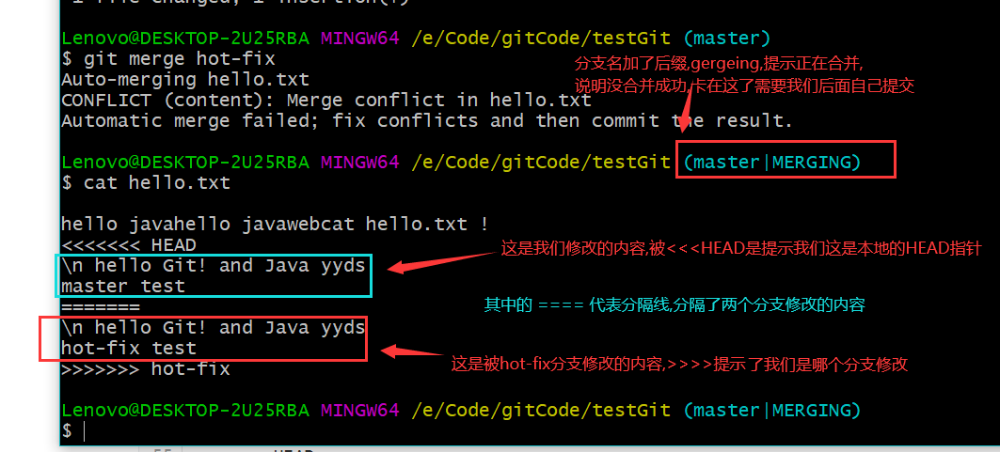
注意!!!我们修改后的提交命令也不能带文件名了,因为如果携带文件名他就不知道该提交哪个
1 2 3 4 5 6 7 8 9 10 11 12 Lenovo@DESKTOP-2U25RBA MINGW64 /e/Code/gitCode/testGit (master|MERGING) $ git add hello.txt Lenovo@DESKTOP-2U25RBA MINGW64 /e/Code/gitCode/testGit (master|MERGING) $ git commit -m "merge test" hello.txt fatal: cannot do a partial commit during a merge. Lenovo@DESKTOP-2U25RBA MINGW64 /e/Code/gitCode/testGit (master|MERGING) $ git commit -m "merge test" [master d74e6d6] merge test
不过,合并只会改变被合并的分支,不会改变拿来合并的分支 ,如下所示,切换到hot-fix分支文件内容依然没变
1 2 3 4 5 6 7 8 9 10 11 12 13 14 15 16 17 18 19 Lenovo@DESKTOP-2U25RBA MINGW64 /e/Code/gitCode/testGit (master) $ cat hello.txt hello javahello javawebcat hello.txt ! \n hello Git! and Java yyds master test Lenovo@DESKTOP-2U25RBA MINGW64 /e/Code/gitCode/testGit (master) $ git checkout hot-fix Switched to branch 'hot-fix' Lenovo@DESKTOP-2U25RBA MINGW64 /e/Code/gitCode/testGit (hot-fix) $ cat hello.txt hello javahello javawebcat hello.txt ! \n hello Git! and Java yyds hot-fix test Lenovo@DESKTOP-2U25RBA MINGW64 /e/Code/gitCode/testGit (hot-fix) $
创建别名 远程库链接太长,为了方便管理,我们通常会给远程库起一个别名替代远程库链接
如下演示:我们在码云创建一个仓库,并且起一个别名,在上面的本地仓库进行
1 2 3 4 5 6 7 8 9 10 11 12 13 14 Lenovo@DESKTOP-2U25RBA MINGW64 /e/Code/gitCode/testGit (master) $ git remote -v Lenovo@DESKTOP-2U25RBA MINGW64 /e/Code/gitCode/testGit (master) $ git remote add testGit https://gitee.com/LQY679/test-git.git Lenovo@DESKTOP-2U25RBA MINGW64 /e/Code/gitCode/testGit (master) $ git remote -v testGit https://gitee.com/LQY679/test-git.git (fetch) testGit https://gitee.com/LQY679/test-git.git (push) Lenovo@DESKTOP-2U25RBA MINGW64 /e/Code/gitCode/testGit (master) $
推送和拉取远程库 请注意:无论是push 远程库还是pull 远程库时,都==需要指定分支==,
并且在push可能因为远程库被修改过了(如远程库比本地库多了些本地库没有的文件),会导致push失败,==所以在push失败时可以先尝试pull在push==
1 2 3 4 5 6 7 8 9 10 11 12 13 14 15 16 17 18 19 20 21 22 23 24 25 26 27 28 29 30 31 32 Lenovo@DESKTOP-2U25RBA MINGW64 /e/Code/gitCode/testGit (master) $ git push testGit master Enumerating objects: 37, done . Counting objects: 100% (37/37), done . Delta compression using up to 12 threads Compressing objects: 100% (24/24), done . Writing objects: 100% (37/37), 3.10 KiB | 528.00 KiB/s, done . Total 37 (delta 7), reused 0 (delta 0), pack-reused 0 remote: Powered by GITEE.COM [GNK-6.2] To https://gitee.com/LQY679/test-git.git * [new branch] master -> master Lenovo@DESKTOP-2U25RBA MINGW64 /e/Code/gitCode/testGit (master) $ git pull testGit master From https://gitee.com/LQY679/test-git * branch master -> FETCH_HEAD Updating d74e6d6..d9ec34f Fast-forward hello.txt | 1 + 1 file changed, 1 insertion(+) Lenovo@DESKTOP-2U25RBA MINGW64 /e/Code/gitCode/testGit (master) $ cat hello.txt hello javahello javawebcat hello.txt ! \n hello Git! and Java yyds master test 在gitee上做的修改 Lenovo@DESKTOP-2U25RBA MINGW64 /e/Code/gitCode/testGit (master) $
SSH公钥免密登陆 gitee和gitHub都支持使用ssh公钥免密登陆,我们在自己电脑绑定公钥后以后进行Git操作就不需要频繁输入密码了
生成公钥命令
1 ssh-keygen -t rsa -C 自己之前的邮箱
生成并且查看公钥
生成的公钥在用户目录中,用户目录即 C:\Users\自己电脑的登陆名,由于我还未生生成,故是没有的,
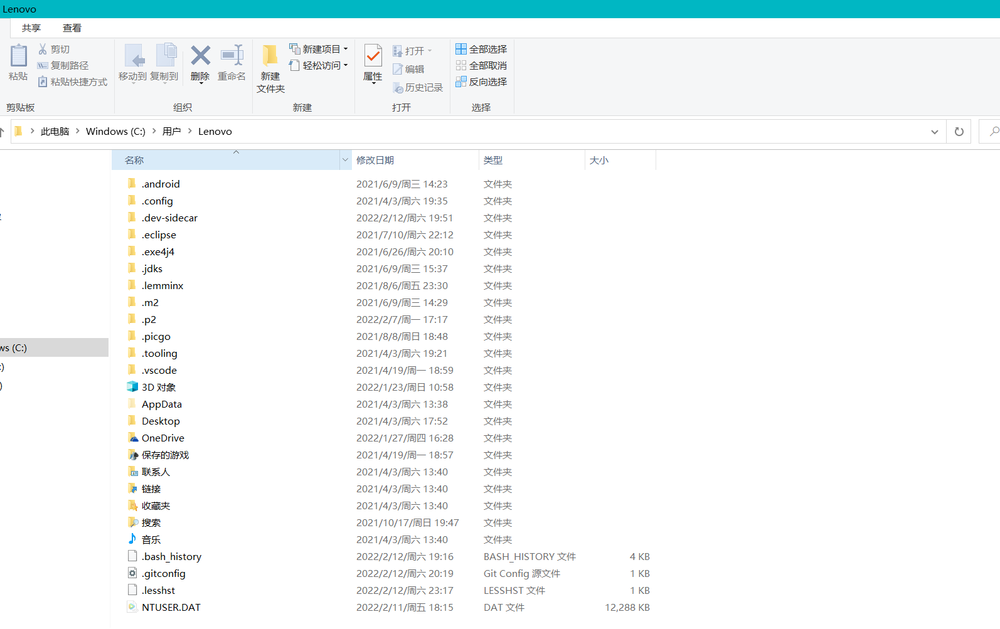
在此目录下右击鼠标打开Git命令行工具,随后输入命令
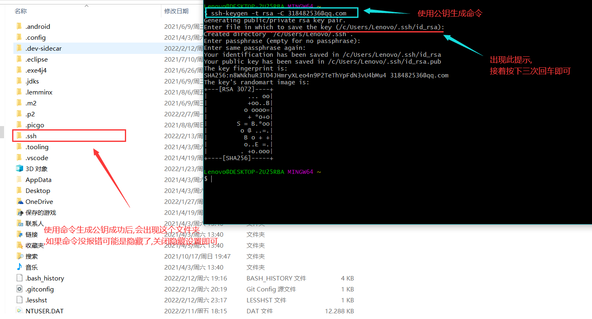
随后进入.ssh目录,会有两个文件 id_rsa ,这个文件内容是私钥, id_rsa.pub 文件的内容是公钥,
复制公钥在平台(Gitee或GitHub)里绑定
登陆Gitee或租GitHub,在个人信息找到相关设置将id_rsa.pub 文件的内容复制后.粘贴到对应平台所需要填写的公钥即可
Git结合IDE使用 忽略项配置文件 ,建议命名成 git.ignore,文件名随意,但后缀名务必为ignore
1 2 3 4 5 6 7 8 9 10 11 12 13 14 15 16 17 18 19 20 21 22 23 24 25 26 27 # Compiled class file *.class # Log file *.log # BlueJ files *.ctxt # Mobile Tools for Java (J2ME) .mtj.tmp/# Package Files # *.jar *.war *.nar *.ear *.zip *.tar.gz *.rar hs_err_pid* .classpath .project .settings target .idea *.iml
复制上面的内容创建忽略项配置文件,其实放哪都行,但是为了方便~/git.config使用,一般也放在 ~/目录下 (注: 学过Linux的应该知道, ~代表用户家目录,window则是C盘下的用户目录下自己的用户命目录**)
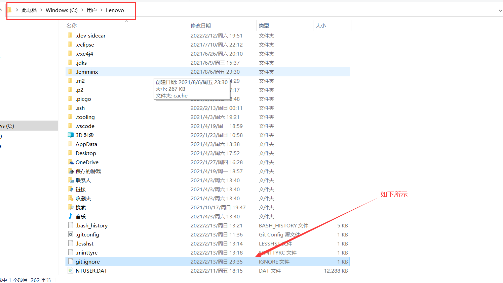
随后打开在用户家目录下的git.config文件 ,文件内容中添加 如下配置
1 2 [core] excludesfile = 刚才的git.ignore文件地址
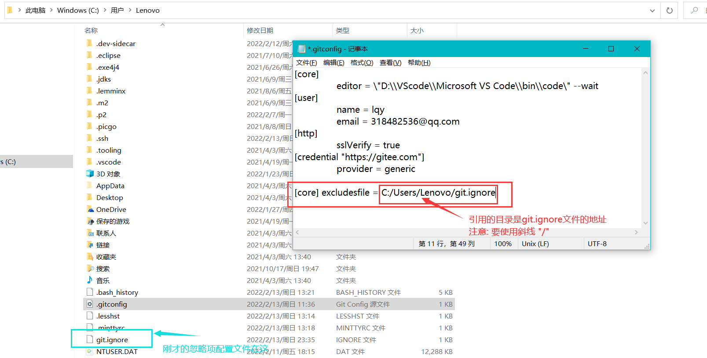
在idea使用Git插件在Gitee上分享项目创建远程库的时候,会遇到如下对话框
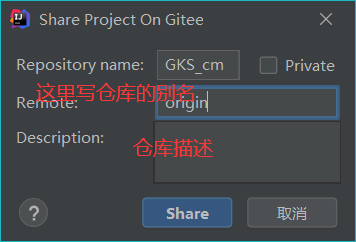